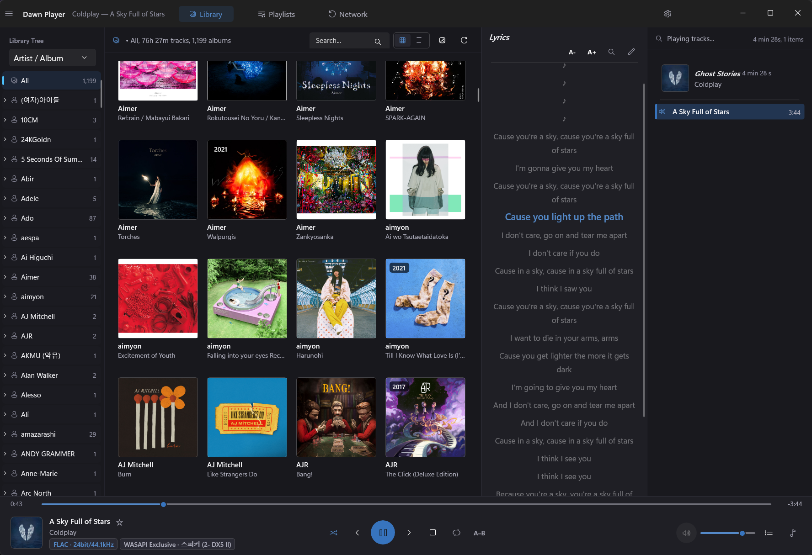

Bit-perfect output
WASAPI exclusive mode hands your DAC the untouched stream, with automatic shared-mode fallback. DSD plays as DoP to a capable DAC or decimated PCM, and the gapless sequencer chains tracks at sample precision.
Free & open source · Windows 10/11
foobar2000-grade functionality wrapped in the Eole design language — WASAPI exclusive output, sample-precise gapless playback, DSD and a query-driven smart playlist engine, inside a quiet native WinUI 3 shell.

Each area below is a finished, working subsystem — not a roadmap item.
WASAPI exclusive mode hands your DAC the untouched stream, with automatic shared-mode fallback. DSD plays as DoP to a capable DAC or decimated PCM, and the gapless sequencer chains tracks at sample precision.
MP3, FLAC, ALAC, Ogg Vorbis, Opus, WAV — plus DSF/DFF (DSD). CUE sheet images are split into track-level virtual tracks so playback, ratings and statistics stay per-track, the foobar2000 way.
An 8-band parametric EQ with per-device profiles, impulse-response convolution, ReplayGain, dynamic loudness leveling, headphone crossfeed and mono downmix — applied live during playback, bypassable bit-perfect.
Tabbed playlists with album group headers, statistics-driven smart lists, and a foobar2000-style query language. Star ratings live in every list row and sync both ways with ID3/Vorbis tags.
Save Internet radio favorites with live ICY station info, browse DLNA media servers on your LAN with cached album art, or stream a YouTube URL — all through the same gapless, EQ-aware engine.
Synced .lrc with current-line highlight, auto-scroll and click-to-seek. Online search through site plugins (LRCLIB, Alsong), preview before apply, and a built-in timestamp editor.
The small, stubborn details that make a player feel finished.
Every release ships with published SHA256 checksums. Requires Windows 10 (19041) or later — no extra runtimes to install.
.exe
Per-user or per-machine setup. Registers shortcuts, a startup entry, audio file associations and the Explorer “play with” menu; detects a running instance and upgrades or uninstalls safely.
Get the installer.zip
Unzip and run — no installation. With the bundled portable.dat
marker, settings and the library database live in a data\
folder beside the executable instead of %AppData%.
Data lives in %AppData%\DawnPlayer (settings.json, library.db,
playlists, art cache). Uninstalling leaves your library and ratings in place.